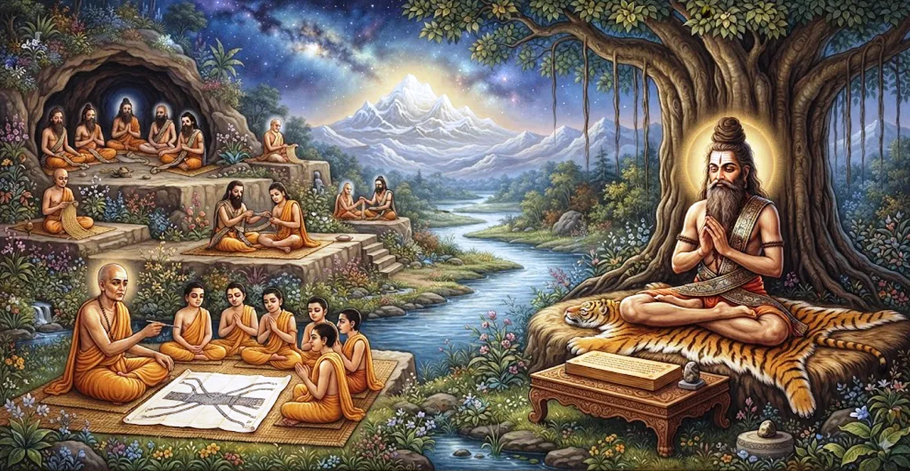

योगापत्ता के नियम
कैलाश संहिता का उन्नीसवां अध्याय उन्नत तपस्वियों द्वारा पहने जाने वाले योगपट्ट (योगिक ध्यान बैंड) के नियमों और आध्यात्मिक महत्व को रेखांकित करता है।
ऋषि सुता ने इस पवित्र बैंड को प्रदान करने और पहनने के प्रोटोकॉल का विवरण दिया है, जो गहन ध्यान और अटूट शारीरिक मुद्रा का समर्थन करता है।
यह अध्याय उन्नत योगिक जीवन के सूक्ष्म विषयों के माध्यम से समर्पित अभ्यासियों का मार्गदर्शन करता है।
अध्याय 19 की मुख्य बातें
योगापट्टा बैंड
पारंपरिक योग ध्यान बैंड की परिभाषा और उद्देश्य की पड़ताल करता है।
तपस्वी प्रोटोकॉल
योगपट्ट प्राप्त करने की पात्रता और पवित्र संस्कारों की रूपरेखा।
आसन स्थिरता
दिखाता है कि कैसे बैंड स्थिर, सहज ध्यान मुद्रा बनाए रखने में सहायता करता है।
प्राण नियंत्रण
योगिक अनुशासन के माध्यम से प्राप्त सूक्ष्म ऊर्जावान संरेखण का विवरण।
शिव ध्यान
भौतिक तप को सीधे परम शिव के चिंतन से जोड़ता है।
शुद्धि का मार्ग
अध्याय 20 में अभ्यासकर्ता को शारीरिक शुद्धता नियमों के लिए तैयार करता है।
इस अध्याय में मुख्य विषय
योगापत्ता की परिभाषा और महत्व
ऋषि सुता ने योगपट्ट को एक पवित्र बैंड के रूप में परिभाषित किया है जिसका उपयोग उन्नत योगियों द्वारा लंबे समय तक ध्यान सत्र के दौरान घुटनों और कमर को एक साथ बांधने के लिए किया जाता है।
यह तपस्वी के शारीरिक विचलन के बिना सर्वोच्च चेतना में स्थिर रहने के दृढ़ संकल्प का प्रतीक है।
पात्रता और बेस्टोवाल प्रोटोकॉल
केवल वे तपस्वी जिन्होंने इंद्रिय नियंत्रण में महारत हासिल कर ली है, सांसारिक मोह-माया का त्याग कर दिया है और उचित दीक्षा प्राप्त कर ली है, वे ही योगपट्ट पहनने के योग्य हैं।
गुरु औपचारिक रूप से बैंड को भगवान शिव के पवित्र मंत्रों और आह्वान के साथ प्रस्तुत करते हैं।
अटल मुद्रा के लिए समर्थन
आसन को एक स्थिर फ्रेम में बंद करके, योगपट्टा अवशोषण (समाधि) की गहरी अवस्था के दौरान शारीरिक थकान और अनैच्छिक गति को रोकता है।
यह भौतिक स्थिरता सीधे तौर पर आंतरिक आत्मा की अटल स्थिरता को प्रतिबिंबित करती है।
सांस और महत्वपूर्ण ऊर्जा को संतुलित करना
ध्यान बैंड का उचित उपयोग प्राण को आंतरिक बनाने में सहायता करता है, केंद्रीय रीढ़ की हड्डी के चैनल के साथ सूक्ष्म ऊर्जा को ऊपर की ओर निर्देशित करता है।
सांस का यह शोधन उच्च ध्यान एकाग्रता और आंतरिक स्पष्टता का समर्थन करता है।
बैंड के अभिषेक अनुष्ठान
उपयोग से पहले, योगपट्टा शुद्धिकरण संस्कार, दिव्य देवताओं की पूजा और पवित्र मंत्रों के साथ किया जाता है।
यह अभिषेक साधारण कपड़े को आध्यात्मिक मुक्ति के साधन में बदल देता है।
पहनने वाले के लिए आचार संहिता
योगपट्टा पहनने वाले को पवित्रता, अहिंसा, सच्चाई और भगवान शिव के निरंतर स्मरण के सख्त मानकों का पालन करना चाहिए।
धार्मिक आचरण से कोई भी विचलन तपस्वी व्रत की आध्यात्मिक शक्ति को कम कर देता है।
अध्याय 20 की ओर
अध्याय 19 में योगपट्ट के नियमों की व्याख्या करने के बाद, ऋषि सुता ने अध्याय 20, 'बाल काटने और स्नान के नियम' का परिचय दिया।
अध्याय 20 आध्यात्मिक जिज्ञासुओं के लिए आवश्यक शुद्धिकरण प्रथाओं और स्वच्छता प्रोटोकॉल का विवरण देता है।
अध्याय 19 की मुख्य शिक्षाएँ
पवित्र समर्थन
योगपट्टा शारीरिक रूप से योगी को अखंड ध्यान प्राप्त करने में सहायता करता है।
उन्नत तपस्या
समर्पित चिकित्सकों के लिए आरक्षित, जिन्होंने मूलभूत विषयों में महारत हासिल की है।
स्थिर शांत
शारीरिक स्थिरता गहरी मानसिक शांति और आंतरिक शांति को बढ़ावा देती है।
प्राणिक संरेखण
महत्वपूर्ण ऊर्जाओं को उच्च चेतना की ओर ऊपर ले जाने में सहायता करता है।
पवित्र उपकरण
उपयोग से पहले बैंड पर मंत्रों और पवित्र इरादे का आरोप लगाया जाता है।
शुद्ध आचरण
सत्य, पवित्रता और शिव के प्रति समर्पण का दृढ़ पालन की मांग करता है।
आध्यात्मिक चिंतन
योगापत्ता जैसी बाहरी सहायताएँ मन के लिए भौतिक लंगर के रूप में काम करती हैं। जब शरीर को सहज मुद्रा में स्थिर रखा जाता है, तो विचार की बेचैन करने वाली लहरें कम हो जाती हैं, जिससे साधक को भगवान शिव की उज्ज्वल उपस्थिति में गहराई से आराम करने का मौका मिलता है।
अध्याय 19 का संदेश जीना
अपने दैनिक ध्यान अभ्यास में शारीरिक और मानसिक स्थिरता पैदा करें, गहरे आंतरिक ध्यान का समर्थन करने वाले विषयों का सम्मान करें।
एक उन्नत तपस्वी की गंभीर प्रतिबद्धता और श्रद्धा के साथ अपने आध्यात्मिक कर्तव्यों का पालन करें।
प्रत्येक मुद्रा और सांस को सर्वोच्च महादेव की भक्ति का प्रसाद बनने दें।
प्रमुख आध्यात्मिक अवधारणाएँ
ध्यान बैंड के उपयोग को नियंत्रित करने वाले पवित्र नियम और विनियम।
बैंड द्वारा समर्थित स्थिर, अटूट ध्यान मुद्रा।
सूक्ष्म प्राणवायु का आन्तरिक नियंत्रण एवं उर्ध्व संरेखण।
उन्नत संन्यासियों से अपेक्षित कठोर नैतिक और जीवनशैली अनुशासन।
आध्यात्मिक अभिषेक और तपस्वी गियर में पवित्र अक्षरों का समावेश।
अध्याय 20 में भौतिक शुद्धता नियमों की ओर आगामी परिवर्तन।
अध्याय सारांश
कैलाश संहिता अध्याय 19 योगपट्ट के नियम प्रस्तुत करता है। योगिक ध्यान बैंड से जुड़ी परिभाषा, पात्रता, अभिषेक, आसन समर्थन और आचार संहिता का विवरण देते हुए, यह अध्याय उन्नत तपस्वियों के लिए आवश्यक मार्गदर्शन प्रदान करता है। यह अध्याय 20, 'बाल काटने और स्नान के नियम' की ओर मार्ग प्रशस्त करता है, जो आध्यात्मिक जीवन में समग्र शुद्धता पर जोर देता है।
अक्सर पूछे जाने वाले प्रश्न
1. कैलाश संहिता अध्याय 19 का प्राथमिक विषय क्या है?
अध्याय 19 उन्नत तपस्वियों और पुनर्निवेशकों द्वारा पहने जाने वाले योगपट्ट (योगिक ध्यान बैंड) के नियमों और महत्व को रेखांकित करता है।
2. योगपट्ट क्या है?
योगपट्टा एक पारंपरिक बैंड या कपड़ा है जिसका उपयोग योगी लंबे समय तक गहन ध्यान और आसन धारण के दौरान घुटनों और पीठ को सहारा देने के लिए करते हैं।
3. योगपट्ट पहनने के लिए कौन पात्र है?
यह उन्नत दीक्षित तपस्वियों और योगियों को प्रदान किया जाता है जिन्होंने मौलिक आत्म-अनुशासन में महारत हासिल कर ली है और आजीवन ध्यान के लिए समर्पित हैं।
4. अध्याय 19 पिछले अध्याय से कैसे जुड़ता है?
जबकि अध्याय 18 एक शिष्य को दीक्षा देने की सामान्य प्रक्रिया स्थापित करता है, अध्याय 19 समर्पित अभ्यासकर्ताओं के लिए उन्नत तप नियमों में प्रगति करता है।
5. योगपट्ट के नियमों का पालन करने से क्या आध्यात्मिक लाभ होते हैं?
यह शारीरिक स्थिरता में सहायता करता है, बेचैन महत्वपूर्ण वायु (प्राण) को शांत करता है, और भगवान शिव पर अखंड एकाग्रता की सुविधा प्रदान करता है।
6. अध्याय 19 के बाद नेविगेशन के लिए अगला अध्याय कौन सा है?
नेविगेशन के लिए अगला अध्याय अध्याय 20 है, जिसका शीर्षक 'बाल काटने और स्नान करने के नियम' है।
"ध्यान के पवित्र बैंड द्वारा समर्थित, योगी पहाड़ की तरह अटल बैठता है, और मन को शिव की शाश्वत शांति में आराम देता है।"
कैलाश संहिता के माध्यम से जारी रखें
अध्याय 19 में योगपट्ट के नियमों का विवरण दिया गया है। अध्याय 20, बाल काटने और स्नान के नियम जारी रखें।